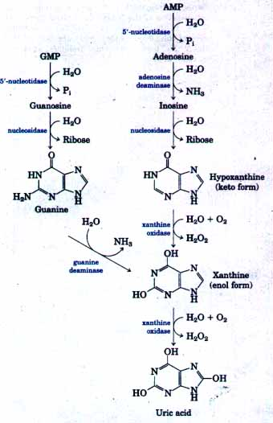
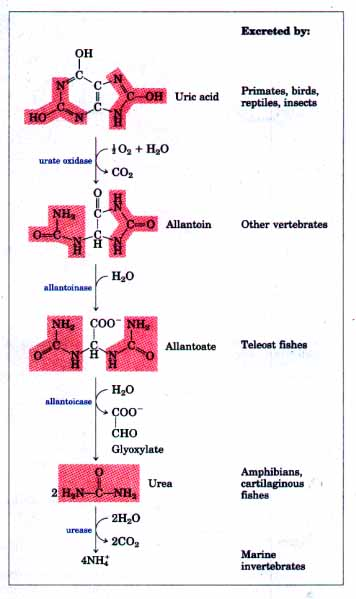
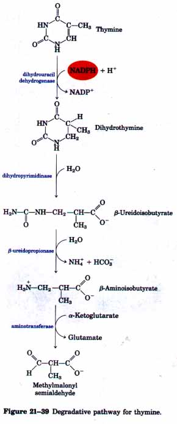
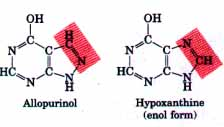
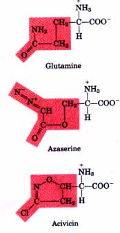
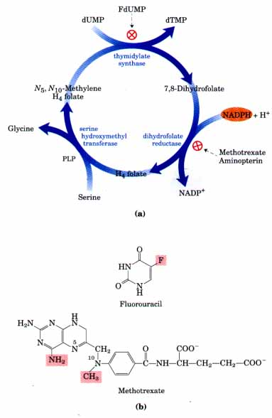
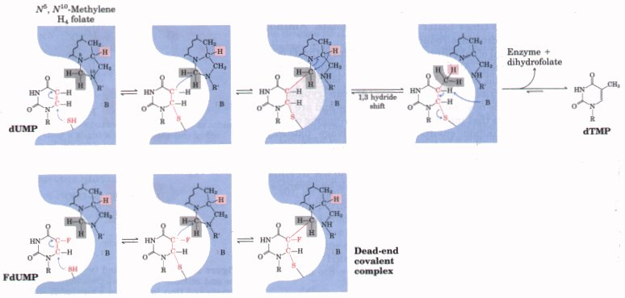

Purine nucleotides are degraded by a pathway (Fig. 21-38) in which the phosphate group is lost by the action of 5'-nucleotidase. Adenylate yields adenosine, which is then deaminated to inosine by adenosine deaminase. Inosine is hydrolyzed to yield its purine base hypoxanthine and D-ribose. Hypoxanthine is oxidized successively to xanthine and then uric acid by xanthine oxidase, a flavoenzyme that contains an atom of molybdenum and four iron-sulfur centers (see Fig. 18-5) in its prosthetic group. Molecular oxygen is the electron acceptor in this complex reaction.


Figure 21-38 Purine nucleotie catabolism. Note that in primates, much more nitrogen is excreted as urea via the urea cycle (Chapter 17) than as uric acid from purine degradation. Similarly, in fish much more nitrogen is excreted as NH4+ than as the urea produced by the pathway shown here.
GMP catabolism also yields uric acid as end product. GMP is first hydrolyzed to yield the nucleoside guanosine, which is then cleaved to free guanine. Guanine undergoes hydrolytic removal of its amino group to yield xanthine, which is converted into uric acid by xanthine oxidase (Fig. 21-38).
| Uric acid is the excreted end product of
purine catabolism in primates, birds, and soma other
animals. However, in many other vertebrates uric acid is
degraded further to the excretory product allantoin, by
the action of urate oxidase. In other organisms the
pathway is further extended, as shown in Figure 21-38.
The rate of uric acid excretion by the normal adult human
is about 0.6 g/24 h, arising in part from ingested
purines and in part from the turnover of the purine
nucleotides of nucleic acids. The pathways for degradation of pyrimidines generally lead to urea. Thymine, for example, is degraded to methylmalonyl semialdehyde (Fig. 21-39), which is an intermediate in the valine degradation pathway. It is further degraded to methylmalonyl-CoA and then to succinyl-CoA (Fig. 17-30). Genetic aberrations in human purine metabolism have been found, some with serious consequences. For example, adenosine deaminase deficiency leads to severe immunodeficiency diseases in humans. The T lymphocytes and B lymphocytes crucial to the immune system do not develop properly. A lack of adenosine deaminase leads to a 100-fold increase in the concentration of dATP, a strong negative effector of ribonucleotide reductase (Fig. 21-35). The increase in dATP leads to the general deficiency in the levels of other dNTPs that is observed in T lymphocytes. The basis for B-lymphocyte toxicity is less clear. Patients with adenosine deaminase deficiencies lack an effective immune system and do not survive unless they are kept in a sterile "bubble" environment. |
 |
Free purine and pyrimidine bases are constantly formed in cells during the metabolic degradation of nucleotides by pathways described above. However, free purines formed on degradation of purine nucleotides are in large part salvaged and used again to make nucleotides. This occurs by a pathway that is quite different from the de novo biosynthesis of purines described earlier, in which the purine ring system is assembled step by step on ribose-5-phosphate in a long series of reactions. The salvage pathways are much simpler. One of the primary salvage pathways consists of a single reaction catalyzed by adenosine phosphoribosyltransferase, in which free adenine reacts with PRPP to yield the corresponding adenine nucleotide:
Adenine + PRPP  AMP + PPi
AMP + PPi
Free guanine and hypoxanthine (the deamination product of adenine; see Fig. 21-38) are salvaged in the same way by a different enzyme, hypoxanthine-guanine phosphoribosyltransferase. A similar salvage pathway exists for pyrimidine bases in microorganisms, but pyrimidines are not salvaged in significant amounts in mammals.
The genetic lack of hypoxanthine-guanine phosphoribosyltransferase activity, seen almost exclusively in male children, results in a bizarre set of symptoms, called Lesch-Nyhan syndrome. Children with this genetic disorder, which becomes manifest by the age of 2 years, are mentally retarded and badly coordinated. In addition, they are extremely hostile and show compulsive self destructive tendencies: they mutilate themselves by biting off their fingers, toes, and lips.
Lesch-Nyhan syndrome illustrates the importance of the salvage pathways. Hypoxanthine and guanine arise continually as breakdown products of nucleic acids. A lack of the crucial salvage enzyme hypoxanthine-guanine phosphoribosyltransferase results in a rise in PRPP levels, which leads to a general increase in de novo purine synthesis. Overproduction of purines leads to high levels of uric acid production, and goutlike damage to tissue occurs (see below). The brain is especially dependent on the salvage pathways, and this may account for the central nervous system damage that occurs in children with LeschNyhan syndrome. This syndrome, and the immunodeficiency disease resulting from a lack of adenosine deaminase, are among the targets of early trials in human gene therapy (see Box 28-2).
| The disease gout, long erroneously
thought to be due to "high living," is a
disease of the joints, usually in males, caused by an
elevated concentration of uric acid in the blood and
tissues. The joints become inflamed, painful, and
arthritic, owing to the abnormal deposition of crystals
of sodium urate. The kidneys are also affected, because
excess uric acid is deposited in the kidney tubules. The
precise cause of gout is not known, but it is suspected
to be due to a genetic deficiency of one or another
enzyme concerned in purine metabolism. Gout can be effectively treated by a combination of nutritional and drug therapies. Foods especially rich in nucleotides and nucleic acids, such as liver or glandular products, are withheld from the diet. In addition, major improvement follows use of the drug allopurinol (Fig. 21-40), an inhibitor of xanthine oxidase, the enzyme responsible for converting purines into uric acid. When xanthine oxidase is inhibited, the excreted products of purine metabolism are xanthine and hypoxanthine, which are more soluble in water than uric acid and less likely to form crystalline deposits. Allopurinol was developed by Gertrude Elion and George Hitchings, who also developed acyclovir, used to treat AIDS, and other purine analogs used in cancer chemotherapy. |
 Figure 21-40 Allopurinol, an inhibitor of xanthine oxidase. Only a slight alteration (shaded) in the structure of the substrate hypoxanthine yields a medically effective enzyme inhibitor. Allopurinol is an example of a useful drug that was designed to be a competitive inhibitor. |
| Cancer cells grow more rapidly than the
cells of most normal tissues, and thus they have greater
requirements for nucleotides as precursors to DNA and RNA
synthesis. Consequently, cancer cells are generally more
sensitive to inhibitors of nucleotide biosynthesis than
are normal cells. A growing array of important
chemotherapeutic agents act by inhibiting one or more
enzymes in these pathways. We will examine several
well-studied examples that both illustrate productive
approaches to treatment of cancer and facilitate an
understanding of how these enzymes work. The first set of examples includes compounds that inhibit glutamine amidotransferases. Recall that glutamine acts as a nitrogen donor in at least half a dozen separate reactions in nucleotide biosynthesis. The binding sites for glutamine and the mechanism by which NH4 is extracted are quite similar in many of these enzymes. Most are strongly inhibited by glutamine analogs such as azaserine and acivicin (Fig. 21-41). Azaserine, characterized by John Buchanan in the 1950s, was one of the first examples of a mechanism-based enzyme inactivator (suicide inhibitor; see p. 222 and Box 21-1). Acivicin shows promise as a cancer chemotherapeutic agent. Other useful targets for pharmaceutical agents are the enzymes thymidylate synthase and dihydrofolate reductase (Fig. 21-42a). These enzymes provide the only cellular pathway for synthesis of thymine. One inhibitor that acts on thymidylate synthase, fluorouracil (Fig. 21-42b), is an important chemotherapeutic agent. Fluorouracil itself is not the inhibitor. In the cell, salvage pathways convert it to the deoxynucleoside monophosphate FdUMP, which then binds and inactivates the enzyme. The mechanism of action of FdUMP (Fig. 21-43, p. 732) represents a classic example of mechanism-based enzyme inactivation. Another prominent chemotherapeutic agent, methotrexate (Fig. 21-42b) is an inhibitor of dihydrofolate reductase. Methotrexate is a folate analog and acts as a competitive inhibitor. The enzyme binds methotrexate about 100 times better than dihydrofolate. Aminopterin also inhibits dihydrofolate reductase. The medical potential of inhibitors of nucleotide biosynthesis is not limited to cancer treatment. All fast-growing cells (including bacteria and protists) are potential targets. Parasitic protists, such as the trypanosomes that cause African sleeping sickness (African trypanosomiasis) lack pathways for de novo nucleotide biosynthesis and are particularly sensitive to agents that interfere with their scavenging of nucleotides from the surrounding environment via salvage pathways. Allopurinol (Fig. 21-40) and a number of related purine analogs have shown promise for the treatment of African trypanosomiasis and related afflictions. (See Box 21-1 for another approach to the treatment of African trypanosomiasis that has been made possible by advances in our understanding of metabolism and enzyme mechanism.) |
 Figure 21-41 Glutamine and two analogs, azaserine and acivicin, that inhibit glutamine amidotransferases and thus interfere in a number of amino acid and nucleotide biosynthetic pathways.  Figure 21-42 Thymidylate synthesis and folate metabolism as targets of chemotherapy. (a) During thymidylate synthesis, N5-,N10-methylenetetrahydrofolate is converted to 7,8-dihydrofolate. The N5,N1?methylenetetrahydrofolate is regenerated in two steps. The details of this reaction are shown in Fig. 21-37. The resulting folate cycle is a major target of several chemotherapeutic agents. (b) The important chemotherapeutic agents fluorouracil and methotrexate. Fluorouracil is converted to FdLTMP by the cell and inhibits thymidylate synthase. Methotrexate is a structural analog of tetrahydrofolate that inhibits dihydrofolate reductase. The shaded amino and methyl groups on methotrexate replace a carbonyl oxygen and a proton respectively, in hydrofolate (see Fig. 21-37). Another important folate analog, aminopterin, is identical to methotrexate except that it lacks the shaded methyl group. |

Figure 21-43 Mechanism of the conversion of dUMP to dTMP catalyzed by thymidylate synthase, and its inhibition by FdUMP. The nucleophilic sulf hydryl group contributed by the enzyme and the ring atoms of dUMP taking part in the reaction are shown in red; : B denotes an amino acid side chain that acts as a base to abstract a proton in the last step. The hydrogens derived from the methylene group of N5,N1?methylenetetrahydrofolate are shaded in gray. A novel feature of the reaction mechanism of thymidylate synthase (top) is a 1,3-hydride shift, which moves a hydride ion (shaded in red) from C-6 of H4 folate to the methyl group of thymidine. This is the third step in the reaction as depicted here, and it results in the oxidation of tetrahydrofolate to dihydrofolate. It is this hydride shift that apparently does not occur when the analog FdUMP is the substrate (below). The first two steps of the reaction proceed normally, but result in a stable covalent complex, with FdUMP linked covalently to the enzyme and to tetrahydrofolate. Formation of this complex inactivates the enzyme.